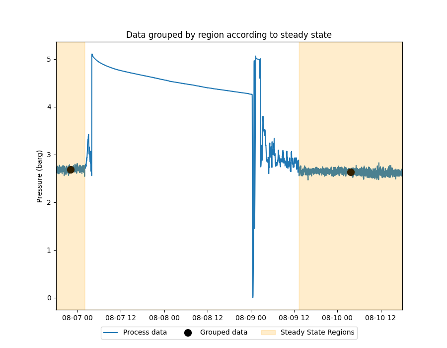

Note
Go to the end to download the full example code.
Group by Region
Example of aggregating (grouping) data on regions defined by a series with integers denoting different states.
In the figure below we are running a Steady State Detection algorithm that produces a series with two states: 0 - transient region, 1 - steady region. This binary series is used to identify the state of interest. Then we run the group_by_region calculation, specifying the state we are interested on, the type of aggregation and where the result should be placed on (timestamp).
import os
import matplotlib.pyplot as plt
import pandas as pd
from indsl.detect import ssd_cpd
from indsl.resample import group_by_region
# Import a dataset with process data
base_path = "" if __name__ == "__main__" else os.path.dirname(__file__)
data = pd.read_csv(os.path.join(base_path, "../../datasets/data/suct_pressure_barg.csv"), index_col=0)
data = data.squeeze()
data.index = pd.to_datetime(data.index)
# Steady state detection parameters
min_distance = 60
var_threshold = 5.0
slope_threshold = -8.8
# Evaluate the Steady State Conditions
ss_map = ssd_cpd(data, min_distance, var_threshold, slope_threshold)
# Group the process data for the regions where steady state is present
aggregated_result = group_by_region(data, ss_map)
# Plot the process data
fig, ax1 = plt.subplots(figsize=(9, 7))
ax1.margins(x=0)
ax2 = ax1.twinx()
ax1.plot(data.index, data.values, label="Process data")
# Plot the aggregated result
ax1.plot(aggregated_result.index, aggregated_result.values, "ko", ms=10, label="Grouped data")
ax1.set_ylabel("Pressure (barg)")
# Plot the Steady State regions
ln2 = ax2.fill_between(ss_map.index, ss_map.values, color="orange", alpha=0.2)
ax2.margins(y=0)
ax2.set_yticks([])
# create legend below the plot
plt.legend(
(
plt.Line2D(data.index, data.values),
plt.Line2D(aggregated_result.index, aggregated_result.values, color="black", marker="o", ms=10, ls=""),
ln2,
),
("Process data", "Grouped data", "Steady State Regions"),
loc="upper center",
bbox_to_anchor=(0.5, -0.05),
fancybox=True,
ncol=3,
)
plt.title("Data grouped by region according to steady state")
plt.show()
Total running time of the script: (0 minutes 6.266 seconds)